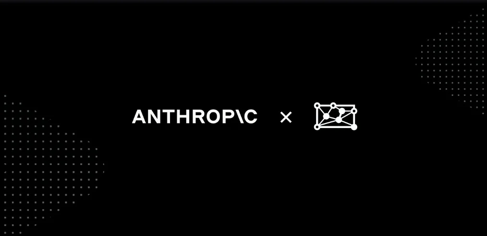
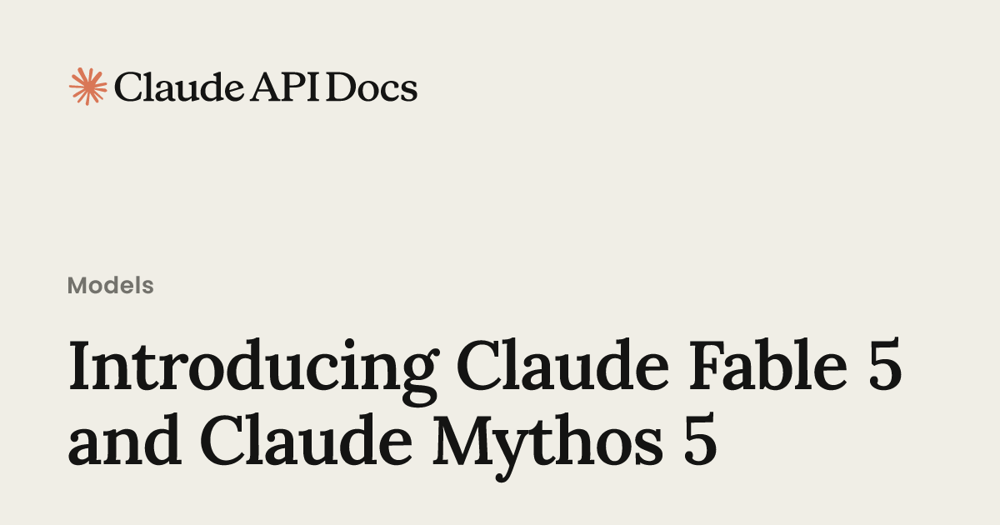

中国创作者视角 • 全球AI前沿 • 每日晨报
Janet's Express Box
2026-06-10 // VOL_253
2026-06-10 // VOL_253
AI 上岗开始加闸
模型能力继续外溢，企业真正买的是安全、留存、算力和责任边界。
今天 AI 圈的重点不是谁又多会聊天，而是模型正式进企业入口后，安全、留存、私有云、融资结构和工作流开始一起加闸。Claude 上新、Apple 扩私有云、GitHub 管外部 Agent、Broadcom 拉资本做 AI 基建，信号很直白：AI 上岗可以，但要先交出控制权。
以下是你今天需要知道的 5 条全球要闻、4 条模型动态、4 条技术深度，以及我的投资视角和工具箱推荐。
保持好奇，保持吐槽。
📌 今日趋势：AI 上岗开始加闸
今天的共同主线很硬：Anthropic 把 Fable 5 推进编码、法律、数据云和 API，Apple 把 Private Cloud Compute 扩到 Google Cloud，GitHub 给第三方编码 Agent 加安全验证，Broadcom 又把资本直接拉进 AI 数据中心。模型能力已经不是孤立卖点，真正的战场变成谁能把模型放进受控环境里稳定干活。
这对中国创作者和企业的含义很现实：下一阶段买 AI，不是买一个更会说话的助手，而是买权限、留存、审计、私有化、成本可见和出错后的责任边界。内容团队要盯记忆和自动化入口，开发团队要盯代码 Agent 的安全验证，老板要盯 AI 工具到底能不能进业务系统，而不是继续堆订阅。
接下来 2-4 周重点盯三件事：一是 Fable 5 这类前沿模型在企业入口里的实测稳定性，二是 Apple 私有云路线会不会带动更多端云混合方案，三是 AI 基建融资会不会从 GPU 采购变成长期金融产品。AI 开始上岗了，但每个岗位前面都会多一道闸。
01 / KEY INTELLIGENCE (全球要闻)
 Anthropic
Anthropic
Anthropic 把 Fable 5 放出来
来源: Anthropic · 2026-06-10 · 原文链接
Anthropic 在文档中公布 Claude Fable 5 和 Claude Mythos 5，强调更强的编码、推理和企业场景能力，并同步给出模型可用性与版本说明。它不是单纯换名，而是把新模型推向 API、开发平台和垂直行业入口。
Janet 锐评：
Fable 5 真正吓人的不是名字，而是 Anthropic 已经把它送进开发、法律和数据云这些高价岗位。企业不会为“更会聊天”买大单，只会为少返工、少出错、少泄密付钱。代码工具团队现在该测的是长任务失败率、权限回滚和审计记录，别再拿几段漂亮 demo 当生产力证据。
 Apple Security Research
Apple Security Research
Apple 把私有云接上 Google
来源: Apple Security Research · 2026-06-10 · 原文链接
Apple 安全研究团队公布 Private Cloud Compute 扩展路线，说明其将通过 Google Cloud Platform 使用 NVIDIA Confidential Computing 技术扩展私有云计算能力。苹果继续强调端侧请求、云端执行和远程证明之间的隐私边界。
Janet 锐评：
苹果这步很现实：手机扛不住的复杂任务，最后还是要进云。但它聪明的地方是先把“我没偷看”做成技术叙事，而不是让用户靠信仰买单。做 iOS 办公、相册、输入法和个人知识库的团队要学这一点，云端能力可以用，隐私证明也必须一起交出来。谁能把安全感做成产品体验，谁才有资格碰个人数据。
 Broadcom
Broadcom
Broadcom 拉资本做 AI 基建
来源: Broadcom · 2026-06-10 · 原文链接
Broadcom、Apollo 和 Blackstone 宣布建立战略合作，推出 AI XPV Platform，目标规模最高 350 亿美元，用于支持 AI 基础设施资产和相关融资安排。AI 数据中心正在从技术项目变成资本结构项目。
Janet 锐评：
AI 数据中心正在变成金融产品，GPU 只是包装盒里最显眼的那块铁。真正难的是电力、折旧、客户租期和现金流能不能对上账，不是机房照片拍得多壮观。国内园区和云厂如果还把智算中心当设备采购项目做，后面大概率会被利用率和财务成本教育。算力故事讲到最后，看的还是账本，不是展厅。
 OpenAI
OpenAI
OpenAI 让记忆在后台整理
来源: OpenAI · 2026-06-10 · 原文链接
OpenAI 推出 ChatGPT 记忆和后台整理相关更新，把用户偏好、历史上下文和主动整理能力继续往产品底层塞。聊天框正在从一次性问答，变成会积累个人上下文的工作入口。
Janet 锐评：
ChatGPT 的记忆功能表面是省事，底层是锁人。它越懂你的口味、客户和工作习惯，你迁移到别的工具时就越疼。创作者可以把选题偏好、品牌禁忌和常用格式交给它，但报价、客户资料和账号策略要分区管理，不然你的商业上下文会变成平台资产。省一次重复输入，别赔掉长期主动权。
 GitHub Changelog
GitHub Changelog
GitHub 给外部 Agent 上安检
来源: GitHub Changelog · 2026-06-10 · 原文链接
GitHub 宣布第三方编码 Agent 的 security validation 正式可用，支持用 CodeQL 和相关安全能力验证外部 Agent 生成的代码变更。GitHub 正在把编码 Agent 从功能入口，推进到安全治理入口。
Janet 锐评：
AI 写代码最危险的阶段不是它不会写，而是它写得像真的。GitHub 给外部 Agent 加 security validation，等于承认“AI 产物默认可信”这件事很荒唐。开发团队可以让 Agent 提速，但主分支前必须有扫描、review 和留痕；省掉这些环节，省下来的工时迟早会用事故补回来。
02 / MODEL UPDATES (模型动态)
 GitHub Changelog
GitHub Changelog
Claude Fable 5 接进 Copilot
来源: GitHub Changelog · 2026-06-10 · 原文链接
GitHub 更新 Copilot 模型选项，Claude Fable 5 进入相关开发者入口。对开发者来说，模型竞争不再只发生在官网，而是发生在每天写代码的 IDE、PR 和 agent 工作流里。
Janet 锐评：
Fable 5 进 Copilot，说明模型入口正在被 IDE 和开发平台拿走。开发者不会每天去模型官网朝圣，他们只会在写代码时选择那个最顺手、最少打断的引擎。国内 IDE 插件和代码 SaaS 要盯默认入口，而不是只盯模型榜单；谁离工作流更近，谁更像收费方。

Snowflake
Snowflake 把 Fable 塞进数据云
来源: Snowflake · 2026-06-10 · 原文链接
Snowflake 宣布 Claude Fable 5 进入 Cortex AI private preview，让企业在数据云环境里调用新模型能力。模型动态的关键点变成数据在哪里，模型就要在哪里运行。
Janet 锐评：
Snowflake 这类数据云接入 Fable，比模型发布本身更有商业味。企业最怕的不是模型不够聪明，而是数据一出仓库，权限、审计和成本全乱套。做 BI、RAG 和客服分析的团队要顺着客户的数据治理体系走，把模型放进客户已经信任的地方，而不是硬劝客户搬家。
 Harvey
Harvey
Harvey 让 Fable 5 进法律活
来源: Harvey · 2026-06-10 · 原文链接
Harvey 宣布在法律 AI 产品中引入 Claude Fable 5，面向法律研究、合同分析和专业工作流提供更强模型能力。法律行业正在成为大模型企业化落地的高价试验场。
Janet 锐评：
法律 AI 是最容易收费、也最容易翻车的赛道。Harvey 把 Fable 5 放进法律工作流，卖的不是“AI 律师”，而是可复核的研究、合同分析和文档处理。国内律所、财税和咨询团队可以抄作业，但必须先把引用、证据链和人工复核流程搭好，别让模型替你承担专业责任。

Anthropic
Mythos 5 把安全牌打到台前
来源: Anthropic · 2026-06-10 · 原文链接
Anthropic 同步介绍 Claude Mythos 5，把模型能力与安全、控制和企业使用场景一起放进版本说明。前沿模型开始主动把可控性当卖点，而不是只堆推理分数。
Janet 锐评：
Mythos 5 把安全牌摆到台前，说明大客户已经不想听“我们模型很强”这种空话了。越强的模型越需要刹车、黑匣子和责任边界，否则它只是更会闯祸。中国企业选模型时别只让业务部门试 prompt，验收表里要写清拒答、越权、留存和审计，不然上线那天就是风险开盲盒。
03 / TECH INSIGHTS (技术深度)
 GitHub Changelog
GitHub Changelog
CodeQL 接管 Agent 代码安检
来源: GitHub Changelog · 2026-06-10 · 原文链接
GitHub 的第三方编码 Agent 安全验证把 CodeQL 等能力接进 Agent 代码流，目标是让外部 Agent 生成的变更在合并前接受安全检查。AI 编码进入企业后，安全工具开始从旁观者变成门卫。
Janet 锐评：
CodeQL 管 Agent 代码，这事一点都不性感，但非常值钱。AI 编码规模起来以后，真正拖垮团队的不是少写了几行代码，而是漏洞、依赖污染和没人看得懂的变更。工程团队要把 Agent 产物当外包代码处理：默认不信任、默认扫描、默认要求人类签字。
 Apple Security Research
Apple Security Research
Apple 私有云押注可信执行
来源: Apple Security Research · 2026-06-10 · 原文链接
Apple 在 Private Cloud Compute 说明中继续强化远程证明、隔离执行和云端隐私边界。它的技术路线不是把所有 AI 都塞进手机，而是在端侧和私有云之间建立可验证的信任链。
Janet 锐评：
苹果的 Private Cloud Compute 路线，本质是在告诉市场：端侧 AI 不是万能解药。复杂任务要上云，但云端必须被验证、被隔离、被约束。做个人数据应用的团队别只会喊“隐私优先”，要拿出用户能理解的控制面板、删除机制和审计说明，否则隐私承诺就是营销纸片。
 Google AI for Developers
Google AI for Developers
Android Bench 测长任务更狠
来源: Google AI for Developers · 2026-06-10 · 原文链接
Google 更新 Android Bench 相关说明，把更复杂的移动端开发与长期任务评测推到台前，并纳入新模型能力比较。模型评测正在从一次性答题，走向能不能在真实工程任务里持续完成。
Janet 锐评：
Android Bench 这种长任务评测，比一次性问答榜单更接近真实世界。用户不是付钱看模型中途分析得多认真，而是要它真的把 App 改完、测试跑完、错误修完。移动开发团队和 AI 编程工具团队应该把失败恢复、环境搭建和上下文保持当核心指标，刷题冠军不等于能交付。
 OpenAI
OpenAI
OpenAI 记忆把偏好变资产
来源: OpenAI · 2026-06-10 · 原文链接
ChatGPT 记忆更新继续把个人偏好、历史语境和自动整理推向产品后台。记忆一旦稳定，就会成为 AI 工作台最难迁移的用户资产。
Janet 锐评：
OpenAI 记忆功能越好用，平台黏性就越强。它记住你的偏好是效率，记住你的客户和策略就变成资产迁移成本。创作者可以用它沉淀选题口味和写作习惯，但要定期导出、清理和分账号使用；别等哪天换工具，才发现自己的工作脑子搬不走。真正的个人 AI，不该变成新一代数据牢笼。
04 / INVESTMENT & PREDICTION (投资视角/大胆预测)
今日核心预测
 Broadcom
Broadcom
AI 基建融资开始证券化
来源: Broadcom · 2026-06-10 · 原文链接
Broadcom、Apollo 和 Blackstone 的 AI XPV Platform 把 AI 基础设施和大额资本安排绑在一起，目标规模最高 350 亿美元。芯片、机房、电力和客户租约正在变成金融机构能理解的资产包。
Janet 锐评：
AI 基建融资开始像地产和能源项目靠拢了。钱可以进来，但最后要靠稳定租约、电力价格和 GPU 利用率还账。国内智算中心别再只讲“多少卡”，投资人和客户更该问三件事：谁长期付费、机器闲置多久、折旧谁承担。算力不是信仰资产，闲着的时候每分钟都在烧钱。
 Sandstone
Sandstone
Sandstone 融资押注法律 AI
来源: Sandstone · 2026-06-10 · 原文链接
法律 AI 公司 Sandstone 宣布完成 3000 万美元融资，方向集中在律师工作流、文档处理和专业服务自动化。投资人继续把钱投向能直接替代高价人力的垂直 AI。
Janet 锐评：
Sandstone 能融钱，说明资本还在押“高价白领流程被 AI 切薄”这条线。法律场景的好处是单价高，坏处是每个错误都可能变成责任事故。国内垂直 Agent 团队别上来就吹全能专家，从合同初筛、尽调摘要、证据目录这种可复核环节切进去，才有真实付款可能。
 TechCrunch
TechCrunch
MANGOS 把估值饥饿摆上桌
来源: TechCrunch · 2026-06-10 · 原文链接
TechCrunch 报道称市场开始用 MANGOS 指代新一批 AI 和科技高估值公司，OpenAI、Anthropic、NVIDIA 等名字被放进同一套叙事里。资本市场正在给 AI 产业链重新造标签。
Janet 锐评：
MANGOS 这种热词一出来，就说明资本市场又开始给 AI 故事换包装了。缩写能制造情绪，不能制造利润。创作者和小老板别被二级市场兴奋带跑，真正该盯的是这些巨头接下来怎么把算力成本转嫁到 API、订阅费和企业合同里；热词越响，账单通常越硬。
05 / CREATOR TOOLBOX (创作者工具箱)